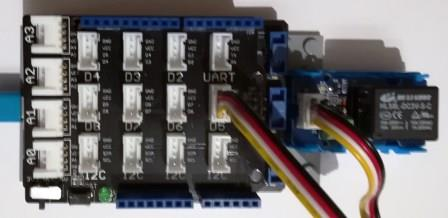

Version: 0.9.0
Grove Relay is connected as followed on Netduino3:

| Grove Relay | Mainboard with base shield |
|---|---|
| Yellow wire | Socket D5 |
using System.Threading;
using Bauland.Grove;
using Bauland.Pins;
namespace TestRelay
{
static class Program
{
static void Main()
{
// Grove Relay module is connected on pin D5 of Netduino 3 board
Relay relay=new Relay(Netduino3.GpioPin.D5);
while (true)
{
relay.TurnOn();
Thread.Sleep(1000);
relay.TurnOff();
Thread.Sleep(1000);
}
}
}
}